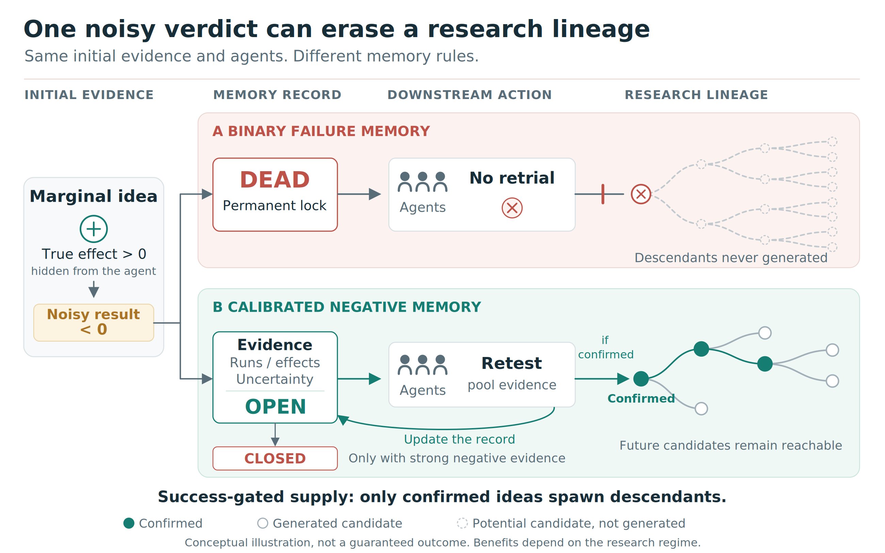

Wrongful Convictions in Shared Failure Banks for Autonomous Research
Why an AI scientist's memory of failure should keep its evidence
School of Computer Science, The University of Sydney
Video
4:08 · subtitles in the video · narrated by a synthetic voice (Kokoro-82M) · animation generated from code in the repository
The fix in one glance
Abstract
Autonomous research systems increasingly share negative knowledge: failed attempts are written to a common bank so that no agent repeats them. We show this design has a structural flaw. The reason is that a failure verdict is a statistical claim produced by a noisy, small-n experiment, and its two errors are asymmetric by construction: a false confirmation is built upon and exposes itself, while a false conviction is locked precisely so that nobody retries it.
The theory: in a model of cumulative research where confirmed ideas beget new ideas, full deference to the bank is optimal when ideas arrive from outside, but when supply is success-gated, discovery is inverted-U in deference, and full sharing forfeits up to 81% of discoveries at long horizons.
The measurements track the closed form: wrongful convictions run at 10–20% in two live training loops and 35–50% for verification-stage near misses, and on a 122,817-conviction public benchmark, near-marginal configurations are still convicted 44% of the time (theory: 45%). Agents obey the label: across twelve deployed LLMs from nine families, free-choice revisits of DEAD-marked ideas are 0/94, and the label alone suppresses selection of an a-priori-best idea in 9/9 families.
The fix is not less sharing but calibrated conviction: each record carries its evidence, and an idea is locked only when that evidence passes a threshold, a schema change rather than an architecture change. In a controlled end-to-end loop with real training runs, evidence-graded memory delivers 30–32% more truth-validated discoveries than binary locks, no memory, or volume-matched parole (8 replicate loops).
The limits are part of the claim: the advantage disappears in a low-noise cell, exactly where the phase structure predicts, and with LLM proposers in the loop the ordering depends on the proposer.
Overview

Papers
-
NeurIPS 2026 Workshop on AI for Science: Verification in the Age of AI Scientists
-
NeurIPS 2026 Workshop: Who Verifies the Agents? Toward Reliable Agent Development
Citation
@inproceedings{bai2026optimal,
title = {The Optimal Memory of Failure Is Lossy: Wrongful Convictions in Shared Failure Banks for Autonomous Research},
author = {Bai, Yingjie and Zhi, Weiming},
booktitle = {NeurIPS 2026 Workshop on AI for Science: Verification in the Age of AI Scientists},
year = {2026},
url = {https://openreview.net/forum?id=ZSUCDw8SSy}
}
@inproceedings{bai2026memory,
title = {The Memory of Failure Should Be Lossy: Wrongful Convictions in Shared Failure Banks for Autonomous Research},
author = {Bai, Yingjie and Zhi, Weiming},
booktitle = {NeurIPS 2026 Workshop: Who Verifies the Agents? Toward Reliable Agent Development},
year = {2026}
}